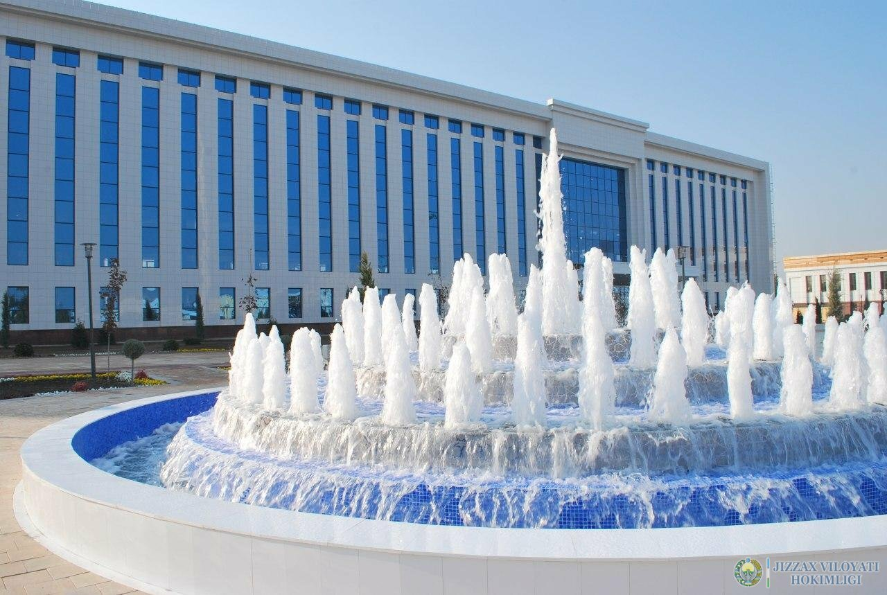

Jizzah viloyati
Jizzax viloyati — Oʻzbekiston Respublikasi tarkibidagi viloyat. Respublikaning markaziy qismida. 1973-yil 28-dekabrda tashkil etilgan. Shim.-sharqda Qozogʻiston Respublikasi va Sirdaryo viloyati, janubi-gʻarbda Samarqand, Navoiy viloyatlari, janubisharqda Tojikiston Respublikasi bilan chegaradosh. Maydon 21,2 ming km2. Aholisi 1 382,10 ming kishi (2020). Jizzax viloyatida 12 qishloq tumani (Arnasoy, Baxmal, Doʻstlik, Sharof Rashidov, Zarbdor, Zafarobod, Zomin, Mirzachoʻl, Paxtakor, Yangiobod, Forish, Gʻallaorol), 9 shahar (Gagarin, Dashtobod, Doʻstlik, Jizzax, Marjonbuloq, Paxtakor, Gʻallaorol,Zarbdor,Zomin), 8 shaharcha (Boʻston, Zafarobod, Oʻsmat, Uchquloch, Bog'don,Pishag'ar,Qoʻytosh,Sharq yulduzi), 95 qishloq fuqarolari yigʻini bor (2001). Markazi — Jizzax shahri (Jizzax viloyati tumanlari haqida tegishli maqolalarga q.)

Bosh sahifaga qaytish